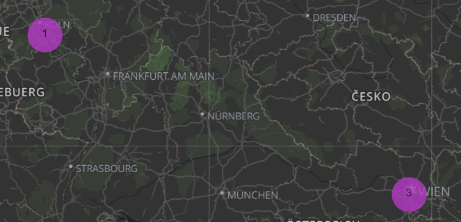

André Rieu & His Johann Strauss Orchestra performing Ode to Joy in Maastricht
Beethoven: an overview

Ludwig van Beethoven is historically collocated in the Classical Period, but his work is the maximum example of the expressive freedom of early Romaticism. He came from a humble family with a strong musical background. His father recognised his talent right away and tried to promote him as enfant prodige (the "next Mozart"). At a very early age he started receiving piano and violin lessons until he became a talented composer, pianist and conductor. During his life he suffered a series of illnesses, including the onset of deafness at 28 which worsened throughout his life until he became completely deaf. Luckily, he had absolute pitch, so he could imagine the sounds and the harmony in his mind without hearing them on an instrument. Therefore, despite this debilitating health condition, he was able to compose 722 works, of which 9 symphonies, 35 piano sonatas and 16 string quartets. He was a perfectionist and was considered a musical revolutionary and innovator (he included a choir in Symphony No. 9, something which had never been done before!)

He was born in December 1770 in Bonn, Germany. He moved to Vienna at a young age. He moved back home for a brief period to attend to his sick mother, but mostly lived and worked in Austria throughout his life. He died in Vienna on March 26th 1827 and his last words are believed to be "I will be able to hear in heaven!"
He was born in December 1770 in Bonn, Germany. He moved to Vienna at a young age. He moved back home for a brief period to attend to his sick mother, but mostly lived and worked in Austria throughout his life. He died in Vienna on March 26th 1827 and his last words are believed to be "I will be able to hear in heaven!"
Beethoven was a versatile composer. His work comprises string quartets, piano sonatas, chamber music, string trio, symphonies, opera compositions, folk songs.
He became known for his dramaturgical compositions and, instead of long motifs, he preferred short ones which were easier to recognize,
as in the opening of his famous Fifth Symphony.
His most known compositions are
'Für Elise' and 'Ode to Joy'. The former is said to have been written for the German opera singer Elisabeth Röckel, whom the composer wanted to marry,
while the latter is the fourth part of his Symphony No. 9. It
was chosen as European anthem in 1972 without lyrics so as not to favor any language over the others (click on the video above to listen to it!)
and is one of the most played pieces in the world.
According to data shared by Spotify, Beethoven has 6.4 million monthly listeners, making him the second most popular classical composer on the platform after Bach.
Beethoven's art and music was deeply influenced by other great composers. First and foremost, Franz Joseph Haydn who was his tutor.
Important figures who also inspired him are the two other classical giants, Johann Sebastian Bach and Amadeus Mozart (explore our website to learn more about them).
Beethoven as well left a mark on those who came after him. His myth is so big that it has shaped our musical heritage and is still present in our culture today in many other different ways,
including through the production of books, movies and TV series centered around his character. Among these Immortal Beloved (1994, directed by Bernard Rose),
which tries to reconstruct his untold love story with a mysterious woman,
and Copying Beethoven (2006, directed by Agnieszka Holland), with a particular focus on the last years of his life and the composition of Symphony No. 9.
Beethoven was not only one of the most talented composers in history, but he also represents an extremely fascinating character who is still a point of reference for researchers
and music lovers worldwide,
and he will definitely keep inspiring us for a very long time.
If you want to find out more about Beethoven's life and works, click here to check out our Melody story.
If you want to find out more about Beethoven's life and works, click here to check out our Melody story.
You might also like:
Johann Sebastian Bach
Wolfgang Amadeus Mozart
Homepage
Wolfgang Amadeus Mozart
Homepage